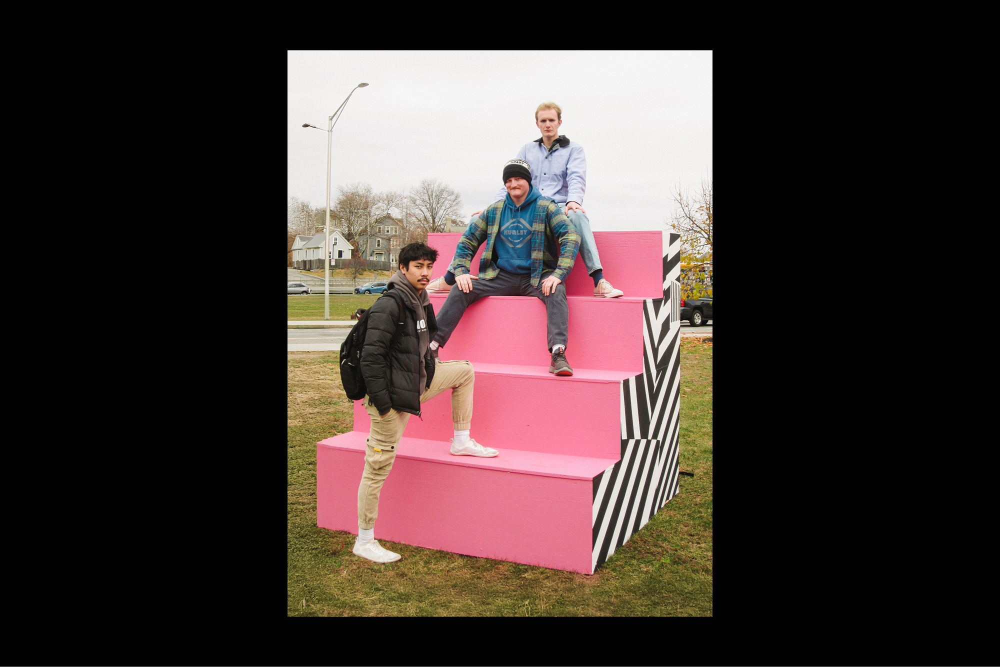
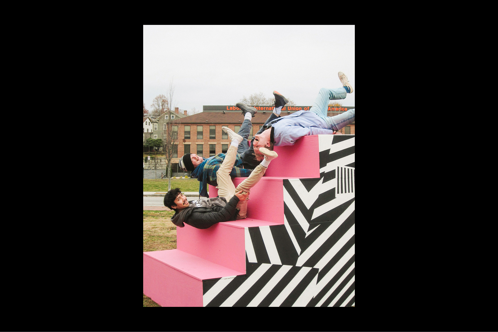
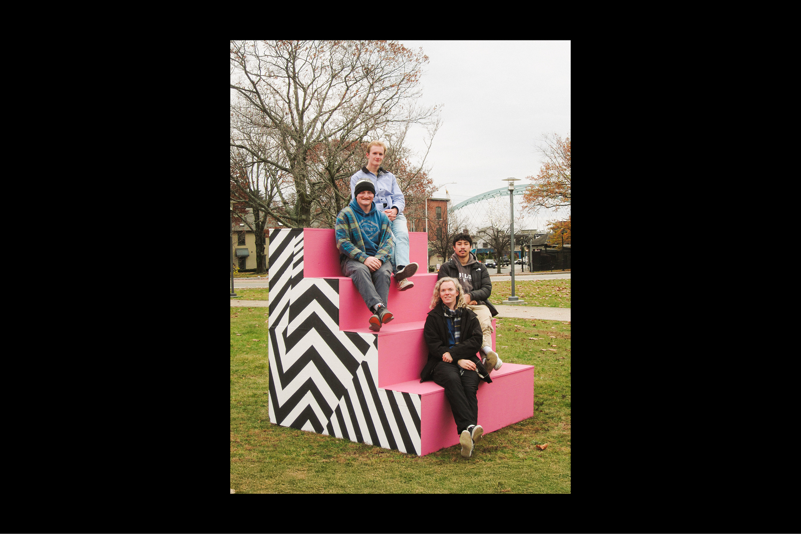
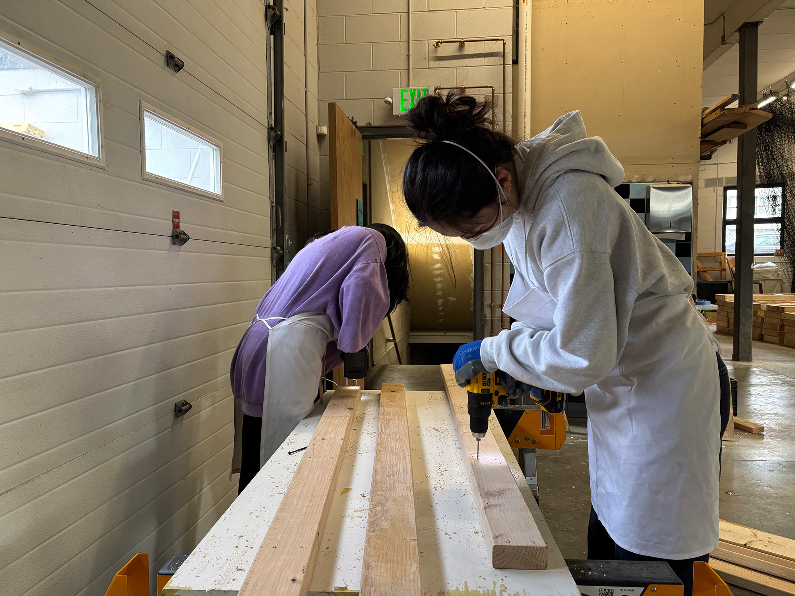

KAITLYN J. KIM
Industrial Design + Sustainability Studies @ the Rhode Island School of Design
Previously @ HyundaixRISD ↗
Open + Happy to Work
STEWPS
YEAR
2025
SKILLSSpatial Design, Large-Scale Fabrication, Community Research/Outreach
ACKNOWLEDGMENTSThank you to Jessica Brown for overseeing and facilitating this project + to my studio mates Christian Buckendorf, Diya Matthew, Jenna Jean-Barnard, Jenny Kim, Mekala Kumar
DESCRIPTION
STEWP is about creating a gathering space where none existed before. Iconic in cities like New York, Chicago, and Philly—Stoop fronts are more than a means to enter and exit a home. They’re meeting places for the neighborhood, especially within communities of color. These are places where neighbors talk and greet one another, elders share stories, kids play, hair gets braided, small businesses thrive, food is shared and secrets are told. Stoops are where community naturally forms. At this moment in time, as people grow more isolated and separated, STEWP becomes a necessary public engagement intervention—an invitation to come together, put your phone down (after you take a picture and read this). sit side by side- face to face, talk, listen, share...and simply coexist. We hope you enjoy.



FABRICATION
We were able to fabricate three STEWPS steps, each measuring 9 × 9 feet. This was my first time working on a large-scale fabrication project, and it was extremely rewarding. Through this experience, I learned the importance of community in conducting projects—not only did our studio participate, but the open studios we hosted also engaged the broader Providence community in our building process. Below is a small look into what a day in the studio looked like!
